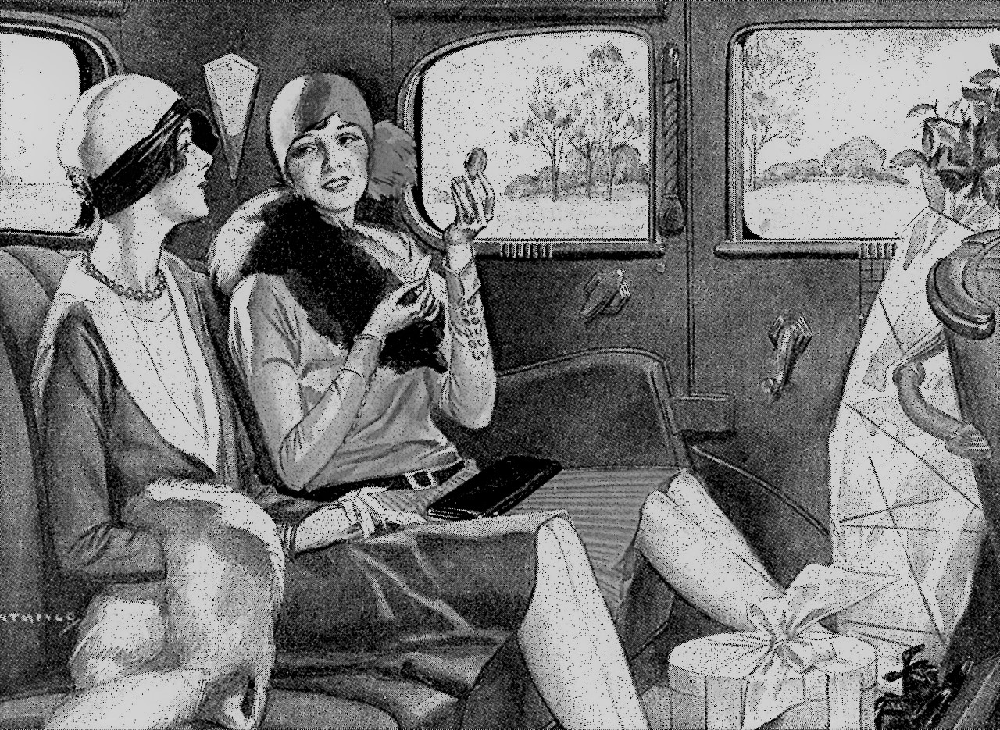
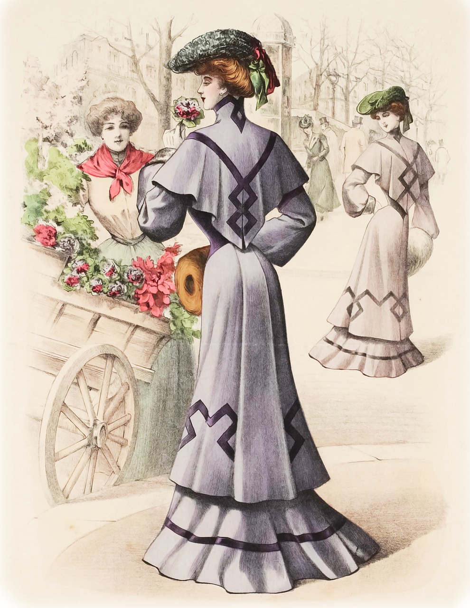
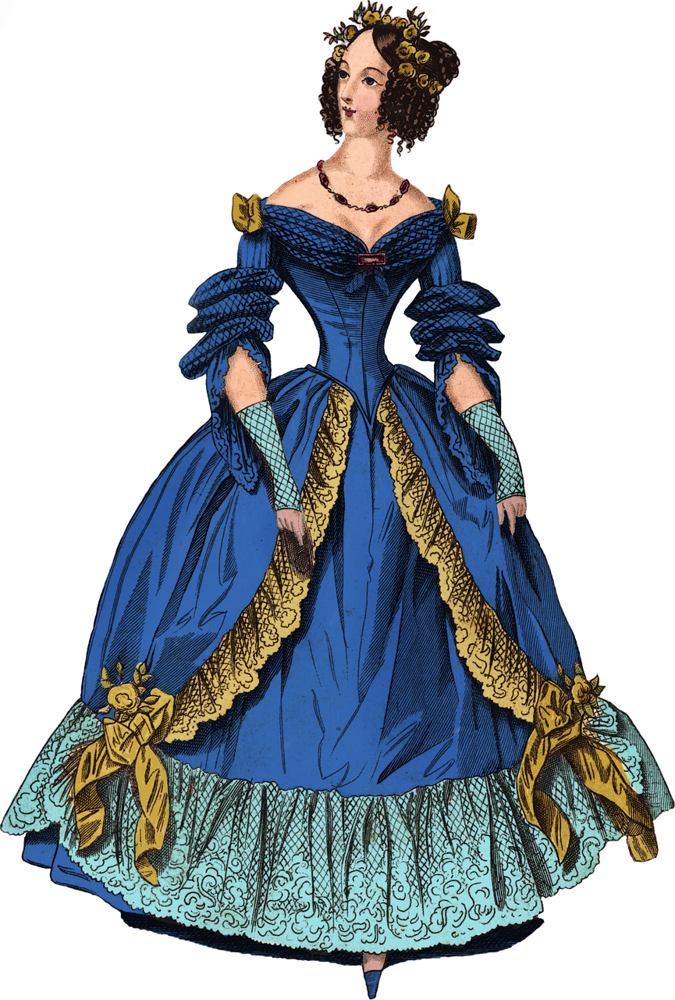

Das Aussehen spielte schon immer eine große Rolle, doch wie haben sich die Styles der Frauen verändert?
Genau das erfahren Sie hier.
1920
In den 20ern wollten Menschen mit Hilfe von Mode, Tanz und ausgelassenen Partys die Schrecken der Kriegsjahre vergessen.
Die Frauen der 20er Jahre erlebten eine nie gekannte Freiheit. Der Kleidungsstil dieser näherte sich dem maskulinen Look an und betonte
so den Lebensstil der Frauen. Während Cocktailkleider zuvor noch anliegend geschnitten waren, verschwand die Taille nun unter einem eher
gerade geschnittenen Kleid. Doch das heißt noch lange nicht, dass Damen der 20er-Jahre auf eine gewisse Freizügigkeit verzichteten.
Oftmals waren der Rücken und die Schultern frei und der Rock war meist nicht länger als knielang.
Accesoires
Bei den Accesoires wurde nicht an Glitzer oder Glamour gespart. Gerade Schärpen und Schleifen zogen die Aufmerksamkeit auf sich. Auch
die „Cloche“, eine gewisse Hutform, gehörte in die Garderobe einer modischen Frau.

1930
In den 30er Jahren war alles im Umbruch und auch die Mode wandelte sich vom sexy Flapperstil der 20er Jahre wieder
zum eleganten Damenlook.
Der neue Trend zeigte sich vor allem in der Betonung der hohen Taille. Frauen trugen weiche, fließende Stoffe, welche
die Silhouette ins rechte Licht rückten. Zu den absoluten Must-haves der 30er Jahre zählte der „Godet-Rock“. Dieser war unten glockig
weit und an der Hüfte äußerst figurbetont. Zudem warf er weiche Falten und wurde gerne mit einem Gürtel kombiniert, um die Taille
zusätzlich zu betonen. Während in den 20er Jahren der Rock noch recht kurz bis zum Knie getragen wurde, nahm die Länge des Rocksaums
in den 30er Jahren wieder zu.
Accesoires
Eines der mit Abstand beliebtesten Accesoires der 30er Jahre war definitiv Pelz.Eine Pelzstola vervollständigte das elegante
Abendoutfit und betonte gekonnt die Schultern. Aber auch im Alltag verzichtete kaum eine trendbewusste Frau auf ein pelziges Accesoire.
Die elegante Perlenkette,auffälig designte Hüte, eng anliegende Gürtel und eine kleine Tasche ergänzten die eleganten Outfits der 1930er.

1940
In den 1940er Jahren gab es keine auffälligen Stilbrüche. Weil die Beschaffung von Lebensmitteln und die Versorgung der Familie
nach dem 2.Weltkrieg im Vordergrund stand, waren viele Frauen darauf angewiesen ihr Kleidung selbst zu nähen und bereits vorhandene Kleidungsstücke
auszubessern. Doch oft stand zu wenig Stoff zur Verfügung, da nicht nur das Essen rationiert wurde, sondern auch Kleidung durch die sogenannte
"Reichskleiderkarte" zugeteilt wurde. Um mit den verfügbaren Ressourcen auszukommen, war also Geschick und Kreativität gefragt. In England gab es
sogar Vorschriften, in denen festgelegt wurde auf unnötige Verzierungen wie Pelz oder Stickereien zu verzichten. Entsprechend sah die Kleidung
der 40er Jahre also recht einfach, schlicht und eher streng aus. Nach wie vor waren Schmetterlingsärmel und Schulterpolster angesagt.
Accesoires
Aufgrund der Ressourcenknappheit, gab es nicht besonders viele Accesoires und auch die Schuhe galten nicht als modisch. Accesoires als reine "Dekoartikel"
waren selten und wurden in manchen Städten sogar verboten.
Die Schuhe waren wie schon gesagt wenig elegant und oft sehr klobig. Schuhe wurden ebenso wie Kleidung so gut wie möglich selbst ausgebessert und bei
den Schuhsohlen wurde auf Holz oder Kork zurückgegriffen, da dies Verhältnisweise billig war.

1950
Die 50er Jahre waren das Jahrzehnt der Gegensätze. Vom weiten Petticoat bis hin zum enganliegenden Bleistiftrock war alles vertreten. Enge Kleider
und stammten noch aus den 40er Jahren, da man versuchte so Stoff zu sparen. 1950 wurden für anliegende Kleidung nicht mehr grobe stoffe verwendet, sondern überaus
feine Stoffe, ebenso wie für die weitschwingenden Röcke der Petticoats. Durch die sogenannte A-Form der 50er Jahre wurden weibliche Rundungen betont.
Viele Frauen strebten nach der Wespenstaille und griffen hierfür zur Miederware, einer Unterkleidung welche eine stützende als auch formende Wirkung hat.
zu den bekanntesten Designern dieser Zeit zählte Christian Dior.
Accesoires
Zu einem der beliebtesten Accesoire der 1950er zählte die Handtasche, um genau zu sein die Clutch. Auch der Hut war ein Must-Have für jede Frau die dem Modetrend
folgte. Die Schuhe waren nicht mit denen der 40er Jahre zu vergleichen. Vor allem junge Frauen trugen immer mehr Stöckelschuhe mit Pfennigabsätzen. Diese "Kitten Heels
sorgten für lange Beine und streckten somit die Figur.
1960
In den 1960er Jahren wurde durch die Erfindung der Anti-Baby Pille die sexuelle Selbstbestimmung der Frau gefördert und eine übergreifende sexuelle
Revolution eingeleitet. Besonders die Flower-Power Bewegung mit ihren freiheitsliebenden Hippies repräsentiert diese nie gekannte Sexmoral. Dieser Wandel veränderte
natürlich auch die Mode der 60er Jahre. Sie war abwechslungsreich und wieder von starken Gegensätzen geprägt. Der ziemlich elegante Look der 50er Jahre
wurde nun zu einem sehr jugendlichen Stil. Wie zu erwarten, prägten vor allem rebellierende Jugendliche diesen Stil.
Mode war nun mehr als nur Kleidung. Sie war Ausdruck einer Lebenseinstellung und somit von großer Bedeutung für den Ausdruck eigener Ansichten. Zu den wichtigsten
Ikonen der 60er Jahre zählten Brigitte Bardot, Jackie Kennedy und das androgyne Model Twiggy.
Vor allem das Model Twiggy wirkte durch ihre kurz geschnittenen, blondierten Haare und dem wenig weiblichen Körper sehr knabenhaft. Statt figurbetonten Kleidern,
standen nun weite Kleider im Vordergrund. Die Schnitte wurden dabei immer kürzer und vor allem der Minirock prägte die 60er Jahre. Er war so beliebt, dass die meisten
Frauen ihn selbst im Winter trugen.
Auch Knabenhafte Figuren mit wenig Oberweite galten als modern und schön. Viele Frauen trugen nun auch transparente Blusen, welche gerade bei der älteren Generation für große
Empörung sorgten.
Ab 1965 wurden die Outfits immer schriller und bunter und somit zunehmend provokanter. Blumen waren das Motif der Kleidung.
Accesoires
In den 60er Jahren flossen auch Accesoires auf fremden Kulturen in den Kleidungsstil ein. Alles war erlaubt. Dies war auch bei den auffälligen Frisuren, wie Pixiecuts, hochgesteckten
bemerkbar.
1970
Auch die 1970er Jahre war ein Zeitalter des politischen Protests und des Ansprangerns von Gesellschaftlichen Zuständen.Besonders aktiv und engagiert war hier wieder die junge
Generation. Gleichzeitig waren die 70er Jahre gekennzeichnet von zahlreichen Krisen.
Sowohl die Ölpreiskrisen als auch das sich ankündigende Ende des Nachkriegaufschwungs beeinflussten die Wirtschaft. Nicht nur politisch, auch in der Mode spielte die neue Freiheit der
Freiheit der Frau eine zunehmende Rolle. Wie in den 60er Jahren prägte die Love-and-Peace Generation die Mode der 70er Jahre.
Es gab keinen direkten Modestil, vielmehr war die Hippiemode das Resultat einer Lebenseinstellung. Die Hippies drückten einen friedlichen Lebensstil aus und kritisierten konservative
Ansichten der Älteren. Die Mode war sehr facettenreich und keineswegs eintönig. Durch verschiedene Stilrichtungen war es auf den Straßen oft sehr bunt und vielfältig. Statt dem Minirock
eroberten nun die Hot Pants den Modemarkt. Diese kurzen waren sehr knapp geschnitten und wurden gerne mit hohen Stiefeln kombiniert. Doch nach wie vor gab es Röcke in den verschiedensten
Längen. Hauptsache hierbei waren die bunten Farben und Applikationen.
Zu einem der wichtigsten Kleidungsstücke der 70er Jahre Frau gehörte die Hose. Die beliebte Schlaghose wurde oftmals mit einer Weste oder einem lang geschnittenen Mantel kombiniert.
Zum betonen der Taille wurden über weite Blusen enge, breite Gürtel getragen.
Accesoires
Die Accesoires der 70er Jahre waren ebenso facettenreich wie die Kleidung. Große Brillen, auffällige Frisuren und lange Ketten gehörten zu jedem Outfit.
1980
In den 80er Jahren war nicht ganz so verrückt wie die der 1970er Jahre.Auffällig waren die Pastellfarbigen Blusen und Hosen. Frauen überarbeiteten die Formen ihrer Kleidungsstücke:
So änderten sie beispielsweise den Kragen, die Knöpfe, nähten Rüschen an die Ärmel oder nähten sie enger. Wichtig waren breite Schulterpartien, welche in jedem Kleidungsstück betont wurden. Bei
den Stoffen, griff man zu Seid und andere feine Stoffe zurück, da die 80er Jahre eher ein Jahrzehnt der bequemen Mode waren. Man achtete jedoch sehr darauf, welches Modelabel man trug. Im Großen
und Ganzen war Power-Dressing das Zauberwort. Männer wie Frauen trugen Karotten- und Bundfaltenhosen. Aber auch enge Jeans, insbesondere die Levi’s 501, waren sehr beliebt.
Accesoires
Der Hut war zu dieser Zeit ein Zeichen der höheren Gesellschaft. Sie orientierten sich hierbei an den klassischen, großen Formen die reich verziert waren. Die meisten Accesoires und Schuhe waren
pastellfarbig. Bei den Schuhen waren Sneaker das Must-Have.
1990
Die 1990er waren geprägt von Samtrollis, Schottenkaros, kompletten Denim-Looks und Plateauschuhen. Beliebt waren Crop-Tops – es war quasi ein Muss bauchfreie Oberteile zu tragen.
Diese wurden entweder mit Jeans in verschiedensten Formen kombiniert oder man trug Spaghetti-Kleider über die engen Tops. Nicht nur normale Crop-Tops waren sehr beliebt, auch die sogenannten
Netz-Shirts. Sie wurden gerne auf nackter Haut getragen sahen jedoch nicht immer so schön aus.
Accesoires
Eines der mit Abstand wichtigsten Accesoires der 90er Jahre war definitiv die Tattoo-Kette. Doch auch die Choker-Ketten waren ein Must-Have. Bei den Schuhen zählten die Plateau-Sneaker zu den
Spitzenreitern. Getönte, kleine Sonnenbrillen waren im Sommer, in allen Gesichtern zu sehen.
2000
Die Modewelt der Frau wandelte sich in den 2000er Jahren manchmal schneller, als sich die Frauenwelt neu orientieren konnte. Während zu Beginn der 2000er noch helle und kräftige
Farben im Trend waren am Ende dieser zeit dunkle Farbtöne und Gürtel mit Nieten im Trend. Am beliebtesten blieben aber immer Jeans-Schlaghosen, da der Jeansstoff zu dieser Zeit im Allgemeinen
eine große Rolle in der Mode spielte. Bauchfreie Tops waren nach wie vor sehr beliebt. Auch Miniröcke kamen wieder in den Trend, weshalb die 2000er oft als die Zeiten der Modesünde bezeichnet
werden.
Accesoires
Die Welt der Schuhe wurde in den 2000er Jahren von Stiefeln dominiert, welche vom Overknee bis zur Stiefelette reichten und auch einen Absatz haben durften. Auch der Pumps war ein Klassiker,
der für alle Anlässe geeignet war. Bei der Kopfbedeckung griffen viele Frauen zu einer Häkelmütze oder machten sich verrückte „Frisuren“.
2010
Auch wenn es nicht jedem gefiel waren Leggings, vor allem enge Lederleggings das Kleidungsstück der 2010er. In Sachen Design und Farben scheint es, als hätten es sich die angesagten
Designer und führenden Fashionhäuser dieser Welt im Modejahr 2010 „einfach“ gemacht. Einige Trends blieben wie aus den vergangenen Jahren. Modelabels konzentrierten sich auf Einzelteil, die
langlebig und vielseitig sind. Blau war jedoch die absolute Trendfarbe in den 2010ern. Die Outfits waren meist eher schlicht und oft mit Spitze verziert.
Accesoires
Wie in den 2000ern waren die überlangen Superstiefel an vielen Frauenbeinen zu sehen. Ansonsten gab es zu dieser Zeit keine allzu auffälligen Accesoires.
2020
Gerade die Jugendmode der 2020er geht in der Zeit 30 Jahre zurück: Schlaghosen, getönte Sonnenbrillen und Crop Tops sind wieder in. Auch der weite Blazer mit Sneakern einer High-Waist
Hose und einem T-Shirt kombiniert ist ein Must-Have. Allzu viel kann man über dieses Jahrzehnt jedoch leider noch nicht sagen, da es erst beginnt.
Accesoires
Gerade im Jahre 2020 war die Maske eines der wichtigsten Accesoire!